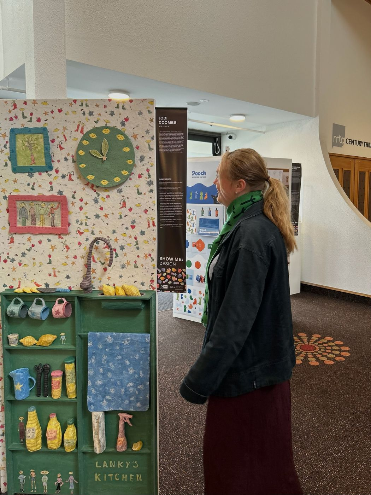
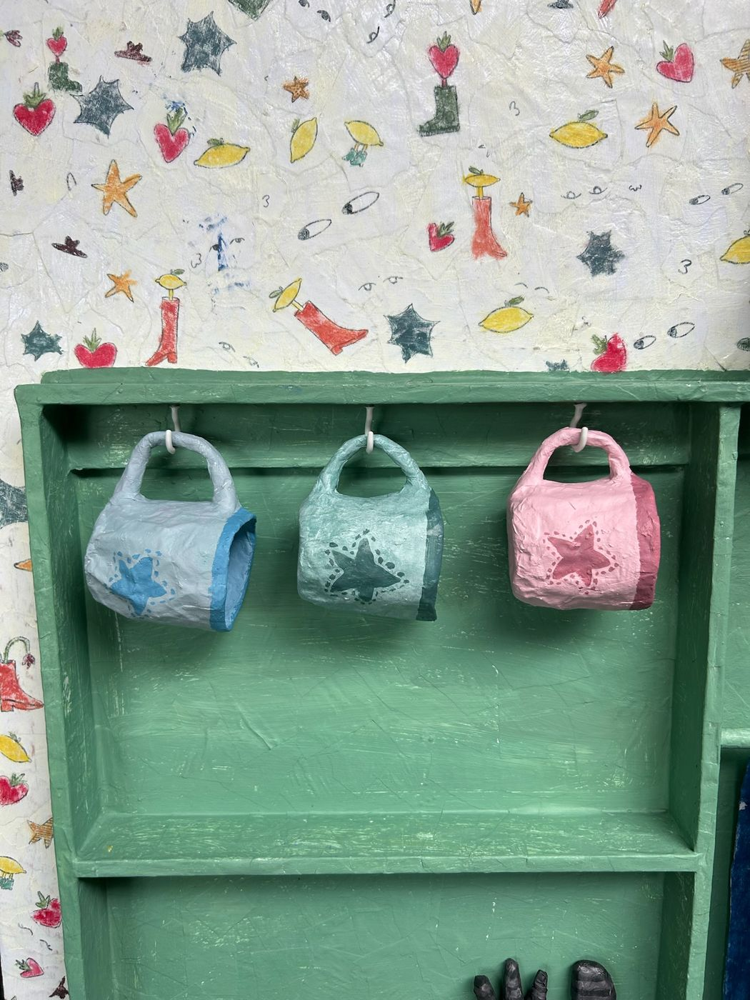
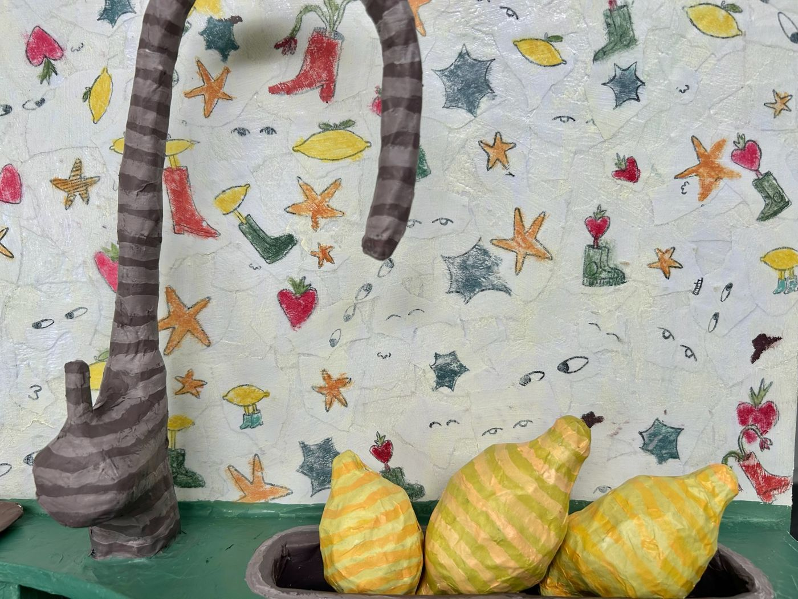
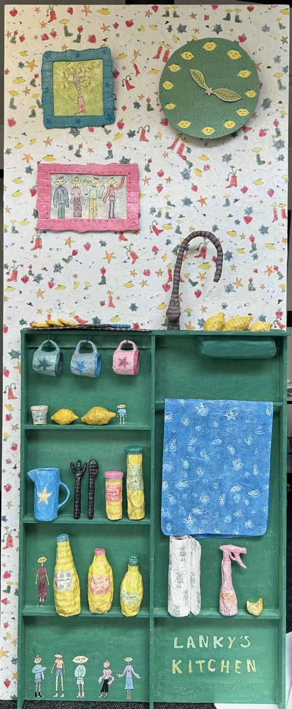

The Lanky Kitchen.
After designing a rice specific spoon Jodi was eager to turn her love for cooking into a life sized papier mache creation.
From paper towels to a clock, Jodi's kitchen had it all. This was displayed at the EIT design showcase. Created from paper mache, Jodi became very familiar with the flexibility of the medium to translate many items.
This experience sparked an interest in life sized creations for Jodi. She sees the joy in inviting others to her world and sees paper as a fun medium to do so.



